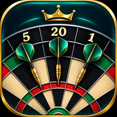

Jürgen zählen.
Jeder Jürgen wird sofort als Punkt gespeichert und mit dem festen Preis abgerechnet.
Jürgen erfassen
Hinweis: Hier erfasste Jürgen werden sofort in der Kasse verbucht.
Jürgen auswählen
Wähle zuerst den Werfer und danach einen der beiden Buttons.
Jürgen-Verlauf
Auf einen Blick
Dart spielen.
Eigene Dart-Partien mit 1–6 Spielern, Trainingsmodi und detaillierter Statistik – getrennt von der Jürgen-Kasse.
Schneller ans Board
Deine Lieblingspartien samt Spielern und Regeln speichern – inklusive JSON-Backup.
Auf die Scheibe. Fertig. Los.
Wähle einen Modus und erfasse jeden Dart als Single, Double oder Triple. Deine Partien und Auswertungen bleiben lokal gespeichert.
Spiel auswählen
Spieler wählen
Partie
Wer ist am Zug?
Nur bei 1, 5 und 20: Single/Double = Jürgen, alle Triple = perfekter Jürgen. Die Buchung wird mit der Aufnahme gespeichert.
Spielstatistik
Letzte Aufnahmen
Spielverlauf
Hier stehen deine gespeicherten Partien. Die persönlichen Leistungsstatistiken findest du jetzt direkt bei jedem Spielerprofil.
Gespeicherte Partien
Dart Elite.
Club-Elo, Trefferstatistiken, DartCoach, Checkout-Tipps und Partieberichte. Ausschließlich aus deinen gespeicherten Würfen – lokal und ohne Konto.
Jeder Dart zählt. Jede Zahl ist belegbar.
Analyse aus echten Partien. Keine erfundenen Scores. Die Jürgen-Kasse wird von diesem Modul nicht verändert.
Club-Wertung
Deine Leistungsanalyse
Checkout-Rechner
Der Rechner verwendet dieselbe Regel-Engine wie der Spielmodus. Die Route ist eine mögliche Empfehlung und kein garantierter Treffer.
Partie-Analyse & Bericht
Profi-Center.
Turniere, Liga, DartBot, Training und persönliche Berichte. Kostenlos und offline nutzbar.
Neues Turnier
Champion-Vorlagen: 501, Double-Out, Best of 3, K.-o. Regeln sind anpassbar; Siegersterne sind bei K.-o. oder Gruppen + K.-o. möglich.
Teilnehmer auswählen
Bei Teamduellen bilden die ersten zwei ausgewählten Spieler Team A, die nächsten zwei Team B. Teamresultate können jetzt im Verein & Teams 2-gegen-2-Scorer gespielt werden. Eine manuelle Eingabe bleibt möglich.
Gespeicherte Turniere
Hier erscheinen Turnierplan und Ergebnisse.
Dart-Trainingszentrum
Eigene Ziele und Trainingsergebnisse – getrennt von der Jürgen-Kasse.
Trainingsverlauf
121 und Zufalls-Checkout erfordern ein Double-Out; die Trainingswerte zählen nicht automatisch als Turnierpartie oder Jürgen.
Spielerbericht
Nur tatsächlich erfasste Partien und Trainings. CSV-Datei oder Drucken → als PDF sichern.
Kamera-Ansicht (manuelle Auswertung)
Foto von der Dartscheibe aufnehmen oder auswählen. Das Foto wird nur auf diesem Gerät angezeigt und nicht hochgeladen. Keine automatische Treffererkennung.
Experimentelle Foto-Kalibrierung
Kein automatisches Erkennen. Nach drei manuellen Punkten wird aus dem angetippten Foto-Punkt ein Feldvorschlag berechnet. Nur mit ausdrücklicher Bestätigung zur laufenden Partie übernehmen.
Bitte ein Foto auswählen, dann den Mittelpunkt des Bulls antippen.
Club-Rangliste und Formkurven
Nur tatsächlich gespeicherte X01-Partien – keine Jürgen-Gebühren oder erfundenen Ergebnisse. Unter neun geworfenen Darts ist der Average vorläufig.
Verein & Teams.
Dartabende, Mannschaftsspiele, Saisonkalender und persönliche Wochenziele. Alles lokal gespeichert und im JSON-Backup enthalten.
Neues 2-gegen-2-Match
Zuerst Team A (Spieler 1 + 2), dann Team B (Spieler 3 + 4). Die Werfer wechseln sich innerhalb der Teams ab.
Gespeicherte Teamduelle
Team-Scoreboard
Dartabend planen
Erstelle einen Spielplan mit allen Paarungen. Ergebnisse kommen ausschließlich aus den über diesen Spielplan gestarteten X01-Partien. Keine Jürgen- oder Kassenbuchung beim Planen.
Teilnehmer auswählen (2 bis 12)
Gespeicherte Dartabende
Spielplan & Ergebnisse
Neue Vereinssaison
Turniere über mehrere Dartabende organisieren, ohne bestehende Turniere zu verschieben oder ihre Ergebnisse zu ändern.
Turnier zu einer Saison hinzufügen
Saisons
Saisonkalender
Persönliche Trainingsziele
Die Fortschritte stammen ausschließlich aus tatsächlich gespeicherten Trainings des Profi-Centers. Keine erfundenen Trainingseinheiten.
Trainingsfortschritt
Geräte und Datensicherheit
Die lokale LAN-Kopplung bleibt eine Beta. Ohne ein zweites Gerät ist kein vollständiger Verbindungstest möglich.
Die Kamera-Hilfe erkennt noch keine Treffer automatisch. Jeder Treffer muss manuell markiert und bestätigt werden.
Dartabend LIVE.
iPhone und Android direkt über dasselbe WLAN koppeln. Kein Cloud-Konto und keine Kosten.
Der Spielstand wird nur auf dem Haupthandy verbucht. Eine neue Verbindung benötigt weiterhin einen Einladungs- und Antwort-QR-Code. Ein automatischer Neustart der Verbindung ohne diesen Austausch ist technisch nicht garantiert.
Spielleiter
Nur dieses Handy speichert offizielle Spielstände, Jürgen und Kassenbuchungen. Starte vorher unter „Spielen“ eine Partie.
1. Einladung für ein Handy
Das andere Handy scannt den Code mit seiner Kamera. Anschließend erstellt es einen Antwort-Code.
2. Antwort vom anderen Handy übernehmen
Antwort-QR mit der normalen Kamera öffnen, dort „Code kopieren“ wählen, zu dieser App zurückkehren und hier einfügen. Die Antwort gehört zu genau dieser Einladung. Bei einem Abbruch bitte eine neue Einladung erzeugen; vorhandene Würfe bleiben gespeichert.
Verbundene Spieler
Mitspielen
Scanne die Einladung des Haupthandys mit deiner Kamera. Der Verbindungscode wird dann hier angezeigt. Alternativ kannst du ihn einfügen.
Antwort an das Haupthandy
Haupthandy scannt diesen QR mit der Kamera, kopiert den Code und fügt ihn dort ein.
Der Spielleiter muss die Zuordnung bestätigen.
Live-Spielstand
Verbindungs-Code aus der Kamera
Der Code wurde aus dem QR-Link erkannt. Kopiere ihn bei Bedarf und wechsle zurück in die installierte App auf deinem iPhone.
Spieler & Statistik.
Punkte aus Würfen und Papierliste, Kronen, Gebühren und offene Beträge.
Papierlisten-Gebühren werden einzeln je Spieler mit 0,30 € pro bekanntem Strich berechnet. Das ist eine rechnerische Bewertung; historische Zahlungen und perfekte Jürgen lassen sich aus der Liste nicht rekonstruieren.
Importierte Spieltage
„Abwesend“ entspricht dem Zeichen % auf der Papierliste. „–“ bedeutet ein leeres Feld, nicht null Punkte. Die Kasse wird durch diese Liste nicht verändert.
Kassenbuch.
Jürgen-Punkte erzeugen Forderungen. Erst Zahlungen erhöhen den Kassenstand.
Geld verwalten
Buchungsverlauf
Einstellungen.
Preis pro Punkt, Spieltage, Datensicherung und Updates.
Preis pro Jürgen-Punkt
Es gilt ein einziger Preis pro Jürgen. Ein normaler Jürgen gibt dem Werfer 1 Punkt. Ein perfekter Jürgen gibt jedem anderen gespeicherten Spieler 1 Punkt, auch abwesenden und archivierten. Der Werfer bekommt keinen Punkt. Der perfekte Jürgen kostet insgesamt nur einmal den eingestellten Preis, unabhängig von der Anzahl der anderen Spieler; die Gebühr wird auf diese Spieler verteilt. Preisänderungen gelten nur für neue Einträge. Die historische Papierliste bleibt bei den dort dokumentierten 0,30 € pro Strich (rechnerisch).
Spieltag wählen
Wähle ein Datum. Für bereits erfasste Spieltage werden die vorhandenen Punkte angezeigt. Neue Daten erhalten einen eigenen Spieltag; Zahlungen und der Kassenstand bleiben erhalten.
Backup & Export
Alle Daten bleiben auf diesem Gerät. Sichere sie regelmäßig als Datei, insbesondere vor Updates oder einem Gerätewechsel.
Lokale Sicherheit & Wiederherstellung
Zusätzliche Sicherungspunkte werden maximal alle 30 Minuten lokal erzeugt und auf fünf Stände begrenzt. Sie ersetzen kein JSON-Backup außerhalb des Geräts.
Version & Update
Neue Versionen werden über die veröffentlichte Website bereitgestellt.
Bei fehlendem Update-Button: Diese Schaltfläche lädt die neueste App-Oberfläche direkt, ohne Spieler- oder Kassendaten zu löschen.